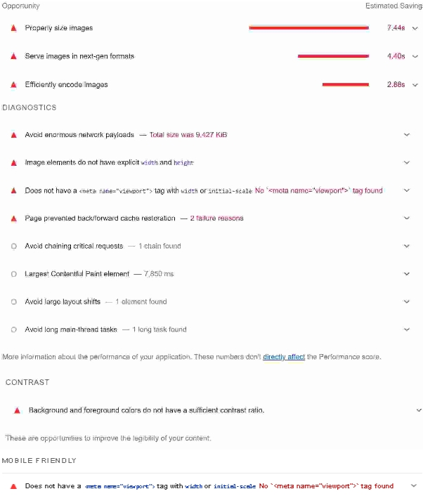

"
"
Accessibility log
In this page, we will talk about accessibility and how we can utilize tools like lighthouse to make our page better. Our process consists of making a page. Afterwards, test the page with lighthouse tool. We document and log the feedback results which we get from the lightohouse tool. Then we improve our pages on the website by learning and documenting from using the lighthouse tool. Hence why we use the title "Accessibility log". We are using the lighthouse tool to improve and better our website by taking pictures and documenting what we should improve on. By adding meta viewport, we improved the design for various devices.
In the first edition, we have established a design for each pages. We also have made content for every page. Below is the first version of the "about" page, this is one of our pages we tested:  By analyzing the results, we concluded that there were some things that we had to change. The design itself had too much yellow tones. When removing the yellow background on the side of the page, it resultet in better scores on lightohouse. We also seem to get a feedback about meta not being included in the page. This is important to include, because this allows us to fit the content according to the users device.